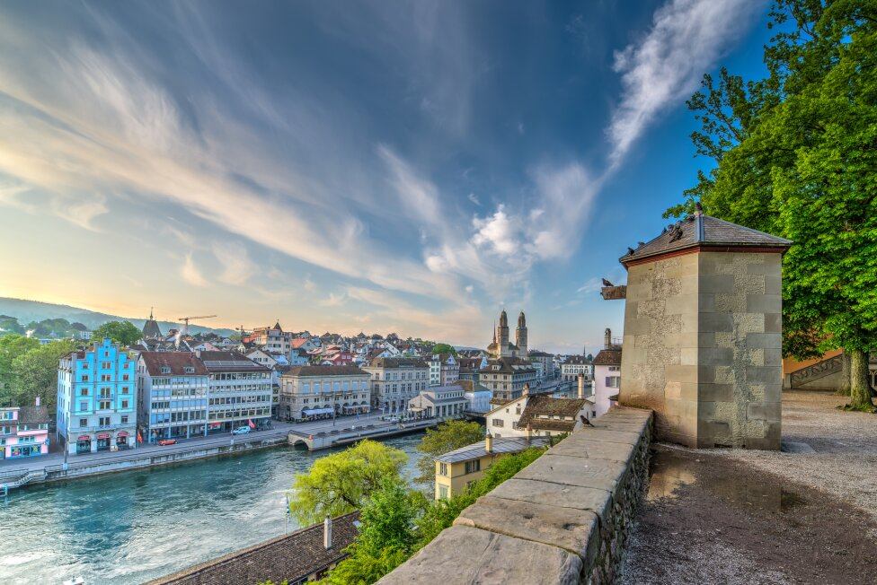

Zurich

Zurich, the largest city in Switzerland, is renowned for its financial institutions, vibrant cultural scene, and picturesque setting by Lake Zurich. Here are some key points about Zurich: Geography and Climate
Location: Situated in the north-central part of Switzerland, Zurich lies at the northwestern tip of Lake Zurich.
Climate: Zurich experiences a temperate climate with four distinct seasons. Summers are warm, while winters are cold and often snowy.
Economy
Financial Hub: Zurich is one of the world's major financial centers, hosting numerous international banks, insurance companies, and the Swiss stock exchange (SIX Swiss Exchange).
High Living Standards: The city consistently ranks high in global quality of life surveys due to its excellent infrastructure, low crime rate, and high standard of living.
Culture and Education
Cultural Institutions: Zurich boasts a rich cultural scene with numerous museums, art galleries, theaters, and music venues. The Kunsthaus Zurich (Art Museum), the Swiss National Museum, and the Zurich Opera House are notable highlights.
Education: Home to several prestigious universities, including the University of Zurich and the Swiss Federal Institute of Technology (ETH Zurich), the city is a hub for education and research.
Tourism and Attractions
Old Town (Altstadt): Zurich's historic center features charming medieval buildings, narrow alleys, and landmarks like the Grossmünster and Fraumünster churches.
Bahnhofstrasse: One of the world's most exclusive shopping streets, Bahnhofstrasse offers a variety of high-end shops, boutiques, and department stores.
Lake Zurich: The lake provides opportunities for boating, swimming, and leisurely walks along its promenades. The nearby Uetliberg mountain offers panoramic views of the city and the Alps.
Transportation
Public Transport: Zurich has an efficient public transportation system, including trams, buses, and trains. The Zurich Hauptbahnhof (main train station) is one of the busiest in Europe.
Airport: Zurich Airport, located about 10 kilometers from the city center, is the largest international airport in Switzerland, providing connections to major cities worldwide.
Events
Zurich Film Festival: Held annually, this event attracts filmmakers and cinema enthusiasts from around the globe.
Street Parade: One of the largest techno parades in the world, the Zurich Street Parade is a vibrant and colorful event held every August.
Zurich combines the charm of a small town with the amenities of a global city, making it a fascinating destination for both residents and visitors.

Site by: Gheruha Bogdan